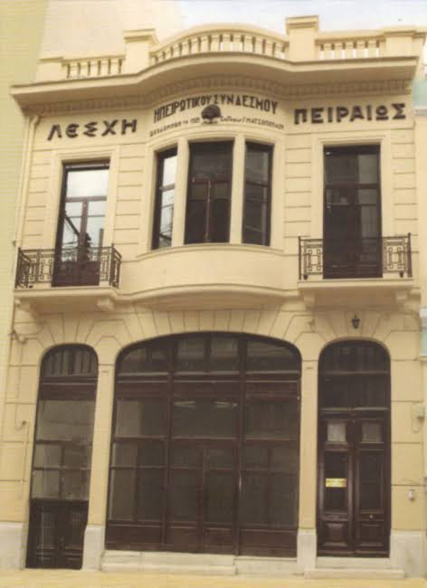

Για εκείνους που έφυγαν. Για εκείνους που περίμεναν. Για όσα κράτησαν την Ήπειρο κοντά.
Υπάρχουν οικογένειες που την ιστορία τους μπορείς να την ακολουθήσεις πάνω σε έναν χάρτη. Το χωριό. Μια πόλη μακριά. Μια διεύθυνση γραμμένη στο πίσω μέρος μιας φωτογραφίας. Κι ανάμεσά τους, χρόνια ολόκληρα ζωής.
Για έναν Ηπειρώτη, η λέξη «ξενιτιά» μπορεί να έχει το πρόσωπο του πατέρα του, της γιαγιάς του, ενός αδελφού. Μπορεί να είναι δική του καθημερινότητα. Ένα σπίτι που το άφησε για να σταθεί στα πόδια του. Ένα παιδί που μεγάλωσε όσο εκείνος έλειπε. Η χαρά που τα κατάφερε, μαζί με το παράπονο για όσα δεν πρόλαβε.
Καμιά αφήγηση δεν χωρά όλους αυτούς τους ανθρώπους στην ίδια μοίρα. Άλλοι επέστρεψαν, άλλοι ρίζωσαν αλλού. Άλλοι βρήκαν ευκαιρίες και ανθρώπους που τους αγκάλιασαν· άλλοι γνώρισαν στερήσεις και μοναξιά. Τους πλησιάζουμε μέσα από όσα σώθηκαν: ιστορικές μελέτες, αρχειακά τεκμήρια, τραγούδια και επώνυμες προφορικές ιστορίες.
Έφευγαν για να μπορέσουν να ζήσουν
Η ηπειρωτική αποδημία έχει πολλές εποχές και πολλές κατευθύνσεις. Στο ιστορικό σημείωμα του Συνδέσμου καταγράφονται, ιδιαίτερα για τον 19ο και τις αρχές του 20ού αιώνα, προορισμοί όπως η Κωνσταντινούπολη, η Αίγυπτος, οι παραδουνάβιες ηγεμονίες, οι ευρωπαϊκές παροικίες και η ελεύθερη Ελλάδα. Η αναζήτηση βιοπορισμού συνδεόταν με τις περιορισμένες δυνατότητες του τόπου και τις ιστορικές του περιπέτειες.[1]
Η ιστορικός Ελευθερία Νικολαΐδου μελετά ειδικότερα τους Ηπειρώτες στη Ρωσία του 19ου αιώνα: ανθρώπους από τα Γιάννενα, το Ζαγόρι, τα Γραμμενοχώρια και το Μέτσοβο, με παρουσία στη Μόσχα, στη Νίζνα, στην Οδησσό και στην Αγία Πετρούπολη. Καταγράφει και τη στήριξη σχολείων, υποτροφιών, εκδόσεων και ιδρυμάτων στην Ήπειρο. Επισημαίνει, όμως, πόσο δύσκολο είναι να προσδιοριστούν με ακρίβεια το πλήθος και οι απαρχές αυτών των μετακινήσεων.[2]
Τα ονόματα των ευεργετών διασώθηκαν σε σχολεία και επιγραφές. Δίπλα τους αξίζει να σκεφτόμαστε κι εκείνους που δεν άφησαν μια μεγάλη δωρεά: τον άνθρωπο που συντήρησε το σπίτι του, πλήρωσε μια ανάγκη των δικών του, άνοιξε δρόμο για ένα μικρότερο αδέλφι. Η αξία μιας ζωής στην ξενιτιά δεν μετριέται μόνο με όσα χρήματα επέστρεψαν.
Έχτιζαν σπίτια μακριά από το δικό τους
Πριν από τις εργοστασιακές βάρδιες, υπήρχε και η εποχική αποδημία της τέχνης. Το υλικό του Μετσόβιου Κέντρου Διεπιστημονικής Έρευνας του ΕΜΠ περιγράφει μαστόρους από τα χωριά της Κόνιτσας, τα Τζουμέρκα και τους Χουλιαράδες. Οργανωμένοι σε μπουλούκια, με επικεφαλής τον πρωτομάστορα, ταξίδευαν για να χτίσουν σπίτια, γεφύρια, βρύσες και μύλους.[3]
Στην ίδια καταγραφή οι ομάδες ξεκινούν μετά την Αποκριά και επιστρέφουν περίπου στα μέσα Νοεμβρίου. Οι συγγενείς τις ξεπροβοδίζουν ως την άκρη του δρόμου. Αναφέρεται και ένα έθιμο: οι γυναίκες άφηναν νερό να τρέξει στον δρόμο, σαν να μπορούσε να κρατήσει τα χνάρια για την επιστροφή. Είναι λαογραφική καταγραφή, όχι συνήθεια που αποδίδουμε αδιακρίτως σε κάθε ηπειρώτικο χωριό.[3]
Μέσα σε αυτή την εικόνα χωρούν δύο μεροκάματα: εκείνο του ανθρώπου που έπιανε την πέτρα και εκείνο του σπιτιού που έπρεπε να συνεχίσει χωρίς αυτόν. Η αναχώρηση έβγαζε τον έναν στον δρόμο και άφηνε στους άλλους τη φροντίδα της καθημερινής ζωής.
Άλλοι δρόμοι, άλλες δοκιμασίες

Πριν από τον ωκεανό
Η φωτογραφία σώζει μια συγκεκριμένη στιγμή της ελληνικής μετανάστευσης. Δεν γνωρίζουμε από αυτήν τα ονόματα, τις ιδιαίτερες πατρίδες ή τη μετέπειτα ζωή των επιβατών. Βλέπουμε ανθρώπους και αποσκευές σε μια βάρκα· όσα ακολούθησαν χρειάζονται άλλα τεκμήρια.[4]
Στη μεταπολεμική Ήπειρο η απομάκρυνση πήρε μεγάλη έκταση. Η UNESCO, παρουσιάζοντας το Πολυφωνικό Καραβάνι, συνδέει τη μετανάστευση προς ελληνικά αστικά κέντρα και το εξωτερικό μετά τον Β΄ Παγκόσμιο Πόλεμο και τον Εμφύλιο με την αραίωση των έμπειρων τραγουδιστών στα χωριά. Η φυγή μετακινούσε μαζί με τους ανθρώπους και τον πολιτισμό τους.[5]
Στις 30 Μαρτίου 1960 υπογράφηκε η ελληνογερμανική συμφωνία προσέλκυσης εργαζομένων. Η ιστορική μελέτη του Ιωάννη Ζελέπου περιγράφει διαδικασίες επιλογής, άδειες και αρχικές ετήσιες συμβάσεις. Η βιομηχανική εργασία έγινε ένας από τους μεγάλους δρόμους της ελληνικής μετανάστευσης.[6] Η γερμανική ομοσπονδιακή ιστορική παρουσίαση καταγράφει διαμονή πολλών εργατών σε παραπήγματα και εστίες με αυστηρούς κανονισμούς, καθώς και μεταγενέστερη οικογενειακή επανένωση.[7]
Η ιστορία αυτή αφορά και τις γυναίκες που έφυγαν για να εργαστούν. Η ιστορικός Monika Mattes δείχνει ότι η πρόσληψη μεταναστριών αποτελούσε ουσιαστικό μέρος της γερμανικής πολιτικής εργασίας. Η εργασία, η μητρότητα, ο οικογενειακός χωρισμός και οι άνισες αμοιβές συναντιούνταν στις ζωές τους. Πρόκειται για το ευρύτερο μεταναστευτικό πλαίσιο, όχι για στατιστική αποκλειστικά των Ηπειρωτισσών.[8]
Η ξενιτιά έχει ονόματα
Στο Greek-Australian Archive της State Library of New South Wales βρίσκουμε ανθρώπους με ηπειρώτικη αφετηρία. Οι παρακάτω σύντομες αποδόσεις βασίζονται στις περιλήψεις των συνεντεύξεων που καταλογογραφεί το Πανεπιστήμιο του Σίδνεϊ. Δεν είναι αυτούσιες δηλώσεις των αφηγητών.
Και το σπίτι που έμενε πίσω;
Ο Θέμις Χατζηγεωργίου, στη μελέτη Η αποδημία των Ηπειρωτών, εξετάζει την αναμονή, τα βάσανα και την επιστροφή όπως αποτυπώνονται στα δημοτικά τραγούδια. Η μητέρα, η σύζυγος, τα παιδιά και ο απόδημος βρίσκονται στις δύο άκρες της ίδιας απουσίας. Πρόκειται για λαογραφικό υλικό: φανερώνει τρόπους με τους οποίους εκφράστηκε ο αποχωρισμός, χωρίς να αποτελεί ατομική βιογραφία κάθε οικογένειας.[13]
Στη δική μας ανάγνωση αυτής της κληρονομιάς, αξίζει να σταθούμε και σε όσα δεν φαίνονται σε μια φωτογραφία επιστροφής. Ποιος μεγάλωσε τα παιδιά όσο ο άλλος έλειπε; Ποιος φρόντισε τους ηλικιωμένους; Τι σήμαινε να χρειάζεσαι τον άνθρωπό σου και να μην μπορεί να βρίσκεται δίπλα σου; Αυτά είναι ερωτήματα για να ακούσουμε τις οικογένειες, χωρίς να τους υπαγορεύουμε τις απαντήσεις.
Το έμβασμα μπορούσε να φτάσει στο σπίτι.
Ο άνθρωπος μπορεί να αργούσε χρόνια.
Κι εκείνος που έφυγε είχε δικαίωμα να κουραστεί, να φοβηθεί, να μη βγάλει όσα περίμεναν. Η επιστροφή χωρίς χρήματα δεν μειώνει τον μόχθο. Ούτε η απόφαση να μείνει κάποιος στη νέα του πατρίδα ακυρώνει την αγάπη του για την παλιά.
Μια φωνή για τον αποχωρισμό
«Ο μισεμός είναι κακός,
το έχε γεια φαρμάκι»
Ο στίχος δίνει στον αποχαιρετισμό μια λέξη σωματική: φαρμάκι. Δεν χρειάζεται να προσθέσουμε μια επινοημένη σκηνή για να νιώσουμε το βάρος του. Το τραγούδι αφήνει χώρο στον καθένα να φέρει τον δικό του άνθρωπο στη μνήμη.
Η συνέχεια αυτής της μουσικής δεν ήταν αυτονόητη. Η UNESCO καταγράφει ότι νέοι εσωτερικοί μετανάστες από την Ήπειρο συγκρότησαν τη «Χαονία» στην Αθήνα στα μέσα της δεκαετίας του 1990. Το Πολυφωνικό Καραβάνι, που επιλέχθηκε το 2020 στο Μητρώο Καλών Πρακτικών Διαφύλαξης, εργάστηκε για να συνδέσει γενιές και τόπους. Το τραγούδι μπορούσε να ξαναβρεί παρέα κι εκεί όπου είχαν εγκατασταθεί οι άνθρωποί του.[5]
Να βρεις έναν δικό σου
Η ιστορία της αποδημίας περνά και από τον Πειραιά. Στις 3 Ιουνίου 1886 ιδρύθηκε η Φιλανθρωπική Αδελφότης των εν Πειραιεί Ηπειρωτών, με φιλανθρωπικό και εκπαιδευτικό προσανατολισμό. Η μετονομασία του 1899 και τα εγκαίνια της Λέσχης τον Απρίλιο του 1932 σημαδεύουν τη διαδρομή του Συνδέσμου. Η κοινή καταγωγή απέκτησε οργανωμένη στέγη και τρόπο προσφοράς προς την Ήπειρο.[1]

Ένας σύλλογος μπορεί να είναι το μέρος όπου δεν χρειάζεται να εξηγήσεις πώς προφέρεται το όνομα του χωριού σου. Όπου μια κουβέντα, ένα τραγούδι, μια γνωριμία δίνουν στην απόσταση ανθρώπινο μέτρο. Η ιστορία του Συνδέσμου →
Για όσους γυρίζουν, η επιστροφή μπορεί να είναι αγκαλιά και αμηχανία μαζί. Ο τόπος αλλάζει· αλλάζει κι εκείνος που έφυγε. Για τα παιδιά και τα εγγόνια των αποδήμων, το χωριό μπορεί να αρχίζει από μια αφήγηση, ένα επώνυμο, ένα καλοκαίρι. Δεν χρειάζεται να έχουν την ίδια μνήμη με τους γονείς τους για να έχουν δεσμό με την Ήπειρο.
Αν η δική σου οικογένεια έχει έναν τέτοιο δρόμο, ίσως αξίζει να τον αφηγηθείς όσο υπάρχουν άνθρωποι να τον θυμούνται. Με τα ονόματα, τις ημερομηνίες, τις δυσκολίες του. Με όσα κερδήθηκαν και με όσα έλειψαν. Να μείνει ο άνθρωπος ολόκληρος μέσα στην ιστορία του.
Ποιος ήταν ο δρόμος της δικής σας οικογένειας;
Ένα γράμμα, ένα διαβατήριο, μια φωτογραφία με ονόματα και χρονολογία μπορούν να γίνουν η αρχή. Αν θέλετε να μιλήσετε στον Σύνδεσμο για το υλικό σας, επικοινωνήστε μαζί μας. Η παράδοση υλικού δεν συνεπάγεται αυτόματα άδεια δημοσίευσης· η προέλευση, τα δικαιώματα και η συναίνεση συζητούνται πριν από οποιαδήποτε χρήση.
Μιλήστε μας για την ιστορία σας →Πηγές και ανοιχτοί δρόμοι έρευνας
Οι αριθμοί μέσα στο κείμενο οδηγούν στις αντίστοιχες πηγές. Τα στοχαστικά περάσματα αποτελούν πρωτότυπο συντακτικό κείμενο του αφιερώματος. Οι ατομικές ιστορίες αποδίδονται περιληπτικά, χωρίς κατασκευασμένους διαλόγους ή συναισθήματα που δεν τεκμηριώνονται.
- Ηπειρωτικός Σύνδεσμος Πειραιώς — Ιστορικό σημείωμα ίδρυσης και εξέλιξης.
Επίσημη ιστοσελίδα του φορέα. Προορισμοί αποδημίας, ίδρυση στις 3.6.1886, μετονομασία το 1899 και Λέσχη το 1932.
- Ελευθερία Ι. Νικολαΐδου, «Ηπειρώτες απόδημοι στη Ρωσία τον 19ο αιώνα και η συμβολή τους στην ανάπτυξη της Ηπείρου».
Δωδώνη, τ. 15 (1986), σ. 103–128. Πανεπιστήμιο Ιωαννίνων, αποθετήριο «Ολυμπιάς». Η περίληψη και η βιβλιογραφική εγγραφή τεκμηριώνουν εδώ τις πόλεις και τις μορφές προσφοράς· δεν υιοθετούνται αβέβαιοι αριθμοί ή χρονολογήσεις.
- ΕΜΠ / Μετσόβιο Κέντρο Διεπιστημονικής Έρευνας — «Οι μάστορες της πέτρας».
Εκπαιδευτική σύνθεση με βιβλιογραφία. Ενότητες για την οργάνωση, τα ταξίδια και τα έθιμα των μαστόρων.
- Library of Congress — Greek immigrants embarking in small boat for steamer for America, Patras, Greece.
Keystone View Company, 1910. Αρ. 2003680488, αναπαραγωγή LC-USZ62-66116. Χρησιμοποιείται η εικόνα του δεξιού τμήματος μέσω Wikimedia Commons. Καμία τεκμηρίωση επιμέρους ηπειρωτικής καταγωγής.
- UNESCO — Polyphonic Caravan, researching, safeguarding and promoting the Epirus polyphonic song.
Φάκελος 01611. Επιλογή το 2020 στο Μητρώο Καλών Πρακτικών Διαφύλαξης. Μεταπολεμική μετανάστευση, «Χαονία» και διαγενεακή συνέχεια.
- Ioannis Zelepos — Griechische Migration nach Deutschland.
Bundeszentrale für politische Bildung, 23.1.2017. Ιστορική σύνθεση για την ελληνική μετανάστευση στη Γερμανία. Για την ακριβή ημερομηνία της συμφωνίας, βλ. επίσης WDR, Kalimera Deutschland.
- Bundesregierung — Gastarbeiter in der Bundesrepublik Deutschland.
Ιστορική παρουσίαση για εργασία, στέγαση και οικογενειακή επανένωση. Αφορά τους μετανάστες εργάτες συνολικά.
- Monika Mattes — „Gastarbeiterinnen“ in der Bundesrepublik Deutschland.
Bundeszentrale für politische Bildung, 8.4.2019. Γυναίκες, εργασία, οικογένεια και έμφυλες ανισότητες. Δεν αποτελεί χωριστή καταμέτρηση Ηπειρωτισσών.
- Αρχείο ΕΡΤ — «Η ιστορία των χρόνων μου», Μιχάλης Γκανάς.
Στην αρχειακή περιγραφή, από 00:34:58 και εξής: ανάκληση των ετών 1948–1954 και ανάγνωση από τη Μητριά πατρίδα. Παραπομπή στην εκπομπή, χωρίς αναπαραγωγή της.
- Greek-Australian Archive — Evangelia Athanassiou.
Συνέντευξη: Nick Doumanis. Κάτοχος: State Library of New South Wales. Καταλογογράφηση και περίληψη στο Opening the Multilingual Archive of Australia, Πανεπιστήμιο του Σίδνεϊ.
- Greek-Australian Archive — Ioannis Dimou.
Συνέντευξη: Nick Doumanis. State Library of New South Wales / OMAA. Συμπληρωματικά: Our People Their Stories, ξεχωριστή βιντεοϊστορία του Ιωάννη Δήμου.
- Greek-Australian Archive — John Dimitriou.
Συνέντευξη: Nick Doumanis. State Library of New South Wales / OMAA. Διατηρείται το όνομα όπως εμφανίζεται στην καταχώριση.
- Θέμις Χατζηγεωργίου — Η αποδημία των Ηπειρωτών.
Ηπειρωτική Βιβλιοθήκη, 1958· ψηφιοποίηση Πανεπιστημίου Ιωαννίνων. Ειδικά οι έντυπες σ. 86–90 για επιστροφή και τραγούδια. Παλαιότερη λαογραφική προσέγγιση, που διαβάζεται στο πλαίσιο της εποχής της.
- Γ. Χρ. Χασιώτης — Συλλογή των κατά την Ήπειρον Δημοτικών Ασμάτων, Αθήνα, 1866.
«Αποχωρισμός», αρ. 2 στην ενότητα Χασιώτη της ψηφιακής μεταγραφής «Ελληνικός Πολιτισμός». Παρατίθεται μόνο ο σύντομος στίχος, όχι σύγχρονη ηχογράφηση ή διασκευή.

Μικρό Πάπιγκο: Ozcraft99, 2016, CC BY-SA 4.0, με περικοπή κατά την προβολή. Πάτρα: Keystone View Company, 1910, Library of Congress, μέσω Wikimedia Commons· η αρχειακή εγγραφή συνδέεται στη λεζάντα. Ηπειρωτική Λέσχη: υπάρχον φωτογραφικό υλικό του ιστοτόπου. Το ηχητικό και φωτογραφικό υλικό των αυστραλιανών συνεντεύξεων παραμένει στους φορείς του· εδώ παραπέμπουμε στις καταχωρίσεις τους.